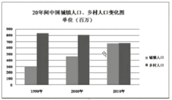
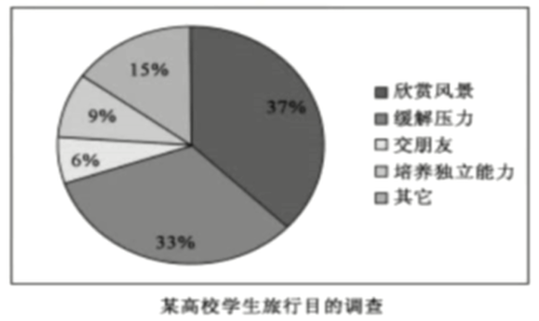

time: 00:00:01 - 00:56:40
5大写作板句, 见上一个笔记
time: 00:56:40
如图所示,
有一个关于...的数据/比例,
上升/下降从...到.../占比...,
伴随...(差值)的变化/最大的比重,
同时另一个数值上升至.../下降至...比例占比...,
好像趋势在不久的将来持续下去。
time: 00:58:49
As is described in the chart, //图表用describe
there is the number of ...(主题1), //
ascending/descending from 横坐标1 to 横坐标2,
with an increase/a decrease/a change of 差值,
(with) the number of ...(主题2) rising/falling to 临界值,
as if the trend would continue in the near future. //as if是虚拟语气, will要用过去式
time: 01:06:15

图表, 动态图
如图表所示,
有一个关于 城镇人口 的数据,
上升了 从1999年上升到了2019年,
伴随着 400ww(700-300) 人口的差值,
与此同时乡村人口下降到了 650w多w,
就像这个趋势会在不久的将来持续下去.
As is described in the chart,
there is the number of urban population/ the population of cities,
ascending from 1999 to 2019,
with an increase of about 400 million,
(with) the number of the rural population/population of villages falling to about 650 million,
as if the trend would continue in the near future.
time: 01:21:25
图表, 静态图

如图表所示,
有一个关于 xxx 的比例,
占比...,
伴随着最大的比重,
同时另外一个占比...,
就像这个趋势会在不久的将来持续下去.
As is described in the chart,
there is the proportion of 对象1,
occupying xx%,
with the largest share of the whole/主题, //最大比重
(with) the percentage of 对象2 accounting for xx%, //accounting for (比例)占
as if the trend would continue in the near future.
time: 01:26:36
如图所示,
有一个关于 '欣赏风景' 的比例,
占比 37%,
伴随着最大的比重,
同时另外一个占比 33%,
就像这个趋势会在不久的将来持续下去.
As is described in the chart,
thers is the proportion of taking the sightseeing, //欣赏美景
occupying 37%,
with the largest share of the whole/the purpose of traveling of students in a university,
(with) the percentage of relieving pressure, making friends, cultivating independent abilities and others accounting for 33%, 15%, 9% and 6%,
as if the trend would continue in the near future.
time: 01:32:40
状语从句(上一个笔记的那个表格)

连词的一词多义
As families move away their stable community, their friends of manny years and their extended family relationships, the informal flow of information is cut off.(2007)
谓语动词:
move 前方As是状语连接词, 所以这个 move 不是谓语动词.
is cut off 是be done形式, 孕妇法则
主语: the informal flow of information, 主谓结构, 被动语态
As是状语从句连接词, ...
You are beautiful, thought. //但是 你很美.(单独使用, thought=but)
Yor are beautiful, thought I don't love you. 你很美, 虽然我不爱你.